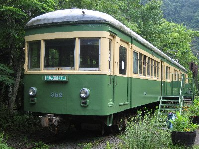
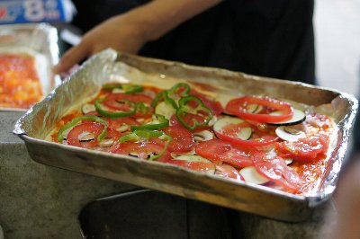
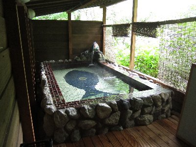
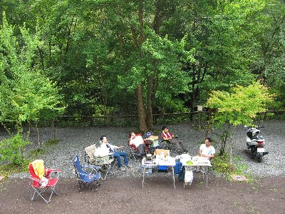

電車でお泊り宴会 | 2012年7月 |
|---|---|
| キャンプと言っていいかわからないが、コテージに泊まってピザ作って宴会しよう！って企画です。 今回は初めて行く場所で、ターキーズハウスって所。国道52号線を山梨方面へ。身延山のちょっと手前を左です。オートキャンプ場だけど、コテージも有り、江ノ電も有るところ。 え？ 江ノ電って何？ そーだよね、意味分からないよね。江ノ電って江ノ島電鉄株式会社の略称で・・・って、そんな話聞いてないって？ ここは、不思議なことに、敷地内に江ノ電の電車が2両止めてあり、コテージ代わりに貸し出しているんです。つまり、江ノ電の中に泊まれちゃうんです。 理由は分からないけど、面白そうだからって理由でここに決めました。 | |
|  江ノ電車両 ココで宴会＆寝ます |  ピザ釜（パンも焼けます） |
| もうひとつ、ここには釜があってピザも焼けるんです。今回はピザ生地まで注文した、お手軽コース。ピザ生地をこねて丸めるところまで用意してくれるんだよね。 温泉経由で夕方到着後、早速材料切って伸ばしたピザ生地に乗せて、釜で焼いてもらう。そしてビール。今回の主目的は宴会ですから。(笑) 他にお客さんも居ないとの事で、広々とテーブルや椅子を広げ、料理を作りつつ、酒を飲む。至福の時です。 街で飲み会をやると、車で来て飲めない人とか、電車の時間を気にしちゃうとか、色々と制限が有ってせいせいしないんですよ。だから時々でもお泊り宴会やりたいんですよね。 | |
|  上手く焼けるかな？まだチーズを載せてません |  江ノ電の中 |
| 夜の帳も降りてきたので、宴会場を江ノ電の中に移動。 この江ノ電、宿泊できるように半分くらいを平らな床にしてあるけど、他はそのまま。だから、電車の中に木のテーブルを置いて、そこで宴会してる感じです。天井の扇風機も廻り照明も付きます。座席もそのまま。ちょっと埃っぽい感じが残念ですが、そこは普段使っていないのでしょうがないか。 宴会終了後は、コテージ組と電車組に分かれて就寝。電車組は、増設した床に寝る人と座席に寝る人と・・・・。 | |
|  お風呂 結構広いよ |  朝食風景 |
| 翌朝、朝食前に昨日入れなかったお風呂に入浴。ここ、大きくて開放的なお風呂が有るんです。朝から気持ちいい〜＼(^▽^/ 朝食を食べ終わって、さあ今日は何をしよう？ そうだ、近いけど行ったことがない身延山に行ってみよう。 身延山って言うけど、身延山久遠寺に行こうって事だね。身延山久遠寺は日蓮宗総本山です。近くは通るけど、行ったことないな〜。まあウチの宗派と違うし。 | |
|  このマッタリ感 |  身延山久遠寺 |
| そして行ってみた身延山久遠寺。デカイね〜 さすが総本山！ 本堂？なのかな、天井にも絵が描かれていて、廻りじゅう金ピカ。いくつも有る御堂を巡って、ちょうどお昼のお勤めが有ると言うので、それを拝聴しました。お経って堅苦しくて眠くなるものだと、ずっと思っていたが、なんか心洗われるような気が「ちょっぴり」しました。 本堂でお坊さんが何十人と一斉に読経するの見てみたな〜。 そんな感じで、今回のお泊り宴会は終了。変わっていて楽しかった。次は自然の中でやりたいな。 | |
 本堂？あ、ここ撮影禁止です（撮っちゃった・・・） |  お昼 蕎麦美味そうでしょう |
| 写真：べっしー＆波平、コメント：べっしー | |